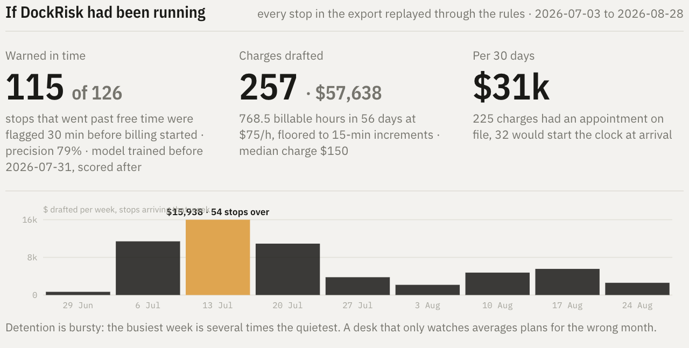
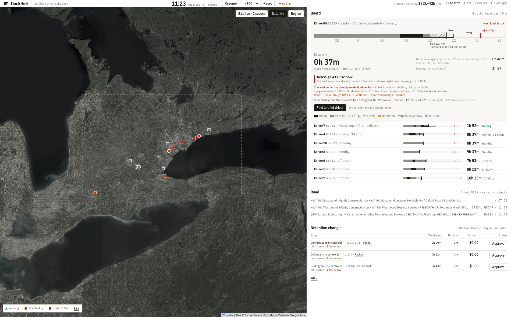
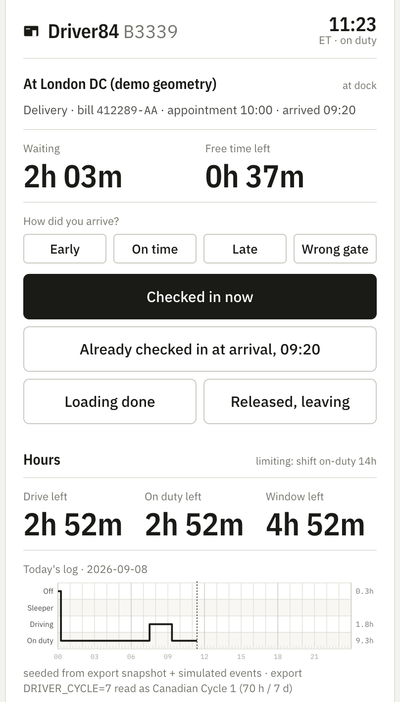
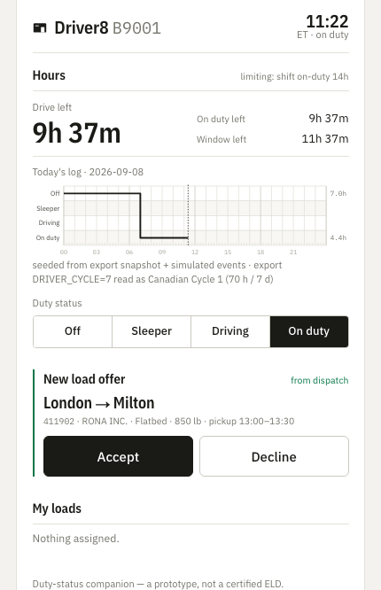
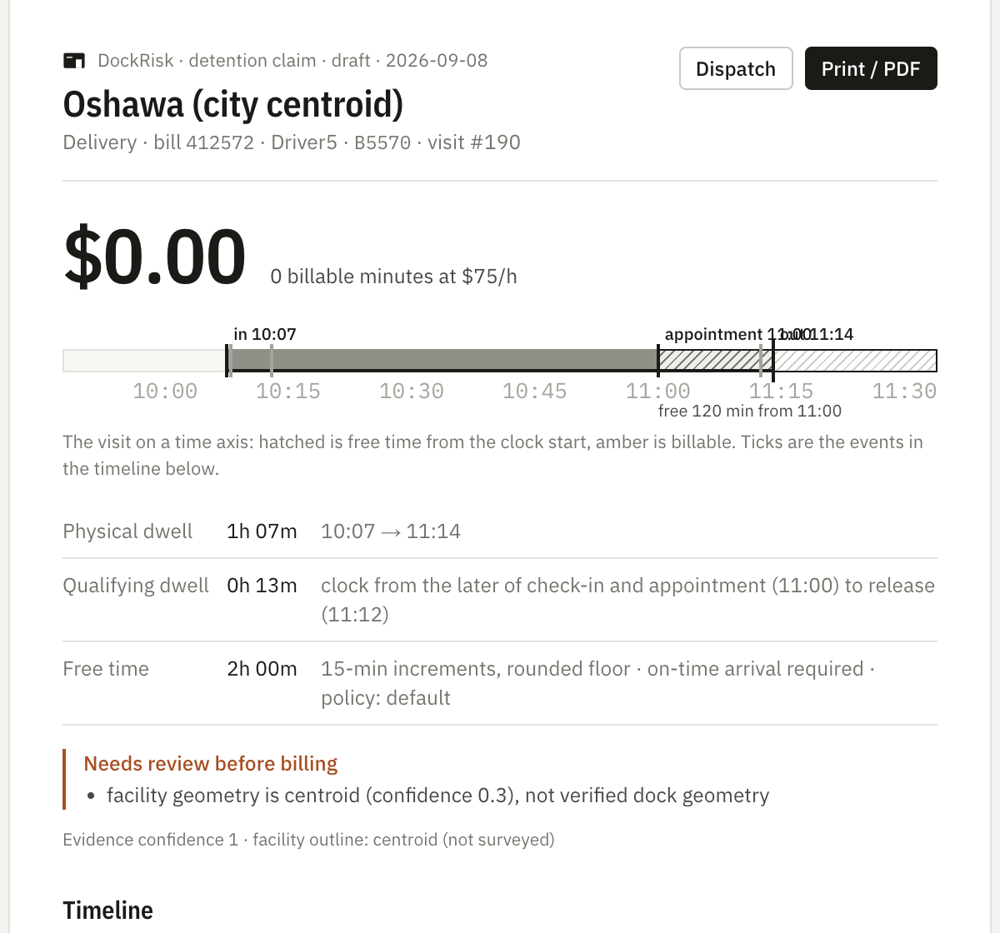
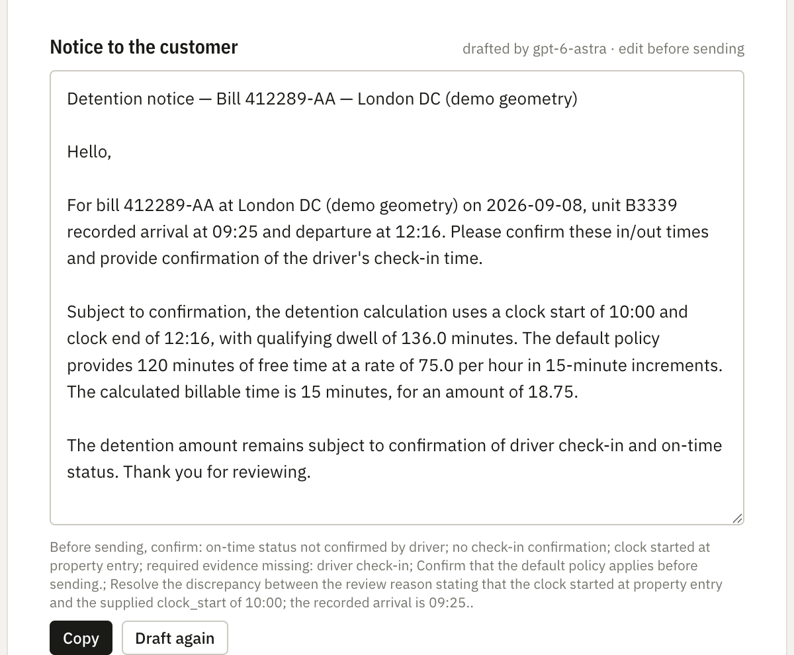
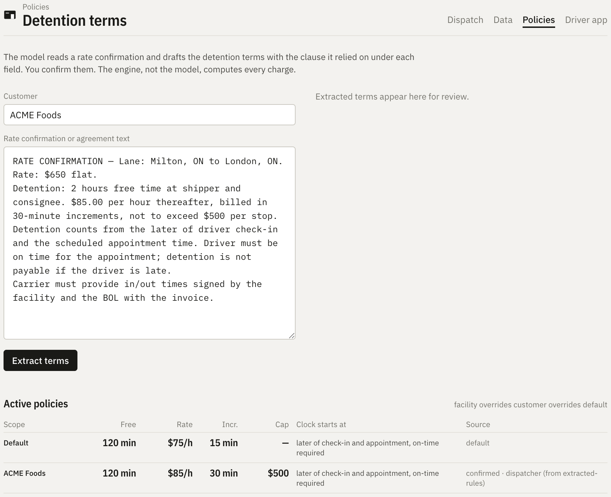

A detention & hours-of-service exception desk. The billing clock and the driver's legal clock, on one time axis — because the operational deadline arrives first.
The truck waits past the two-hour free allowance. Nobody wrote down the in and out times, so there is no defensible claim — and the carrier eats it. Every TMS on the market can compute this after someone types the timestamps in. Nobody types them in.
A driver can have driving hours left while the dock wait eats the 14-hour on-duty window. The next pickup becomes infeasible before the free time even runs out — so the desk finds out when the driver calls, hours after it could have been fixed.
These are not our estimates. Every figure is produced by the code in the repo, running the organizers' file through the rules. The one number we will not say is "unbilled" — the export has no billing records, so we say exposure.
July drafted nearly three times what August did. A desk that watches averages plans for the wrong month — and a desk that watches nothing bills neither.

37 minutes. That is the gap in the demo scenario — the next load dies at 12:53, the free time does not run out until 13:30. Every detention product on the market starts paying attention at 13:30. By then the load is gone and the only question left is who eats it.

411902 London → Milton, pickup by 13:30 · margin at arrival 1h 14m · if released now −0h 49m · after the predicted wait −0h 55m
100% chance this stop exceeds free time given 2h 03m waited · median +6 min, p90 +74 · city history, n=9
Three margins, not one verdict: at arrival tells the dispatcher this was always tight; if released now is the best case; after the predicted wait is the honest one. All three are shown because a dispatcher who is about to move a load wants to see the argument, not the answer.


Duty-status companion — a prototype, not a certified ELD. Labelled that way in the product too.
Arrival → driver check-in → the two clocks collide with a live 401 event → offer and relief → release and charge → the evidence packet. One scenario, start to finish, on the simulator's clock.
If the live app stalls: press play here. 90 seconds, same scenario, recorded. Do not apologise — just keep talking over it.
facility geometry is centroid (confidence 0.3), not verified dock geometry
Every line carries its rule in words. Below this sits the event ledger — every transition, who reported it (GPS geofence, driver app, engine) and when it was received.

A carrier's rate con becomes structured detention terms — free time, rate, increment, clock-start rule — with the clause quoted under each field, so the dispatcher confirms against the contract, not against the model.
Written from the evidence packet that already exists. Every figure in the draft is checked against the engine's own output before it is shown.
The rule we did not break: the model never produces an amount, a duration or a deadline. When the endpoint is absent the rules path runs and the product keeps working.

Every carrier we read about argues the same four things with every shipper: when the clock starts, how long is free, what it costs, and whether the driver has to have been on time. So those are fields, editable at the desk, versioned, and replay-safe — change the policy and the historical replay recomputes rather than rewriting the past.
Of the 257 charges drafted from the export, 225 had an appointment on file and would start the clock at the appointment; 32 would start it at arrival. Same fleet, same month, two different rules — which is exactly why this cannot be hard-coded.

The Trucks sheet has exactly one column — a truck number. There are no specs in the file, so the check is not buildable. Trailer-capacity checks are, and those we do.
Our first "finding" was that the export's leg HOS was dangerously stale. It failed its own test: it is a frozen per-driver copy, not a decision field. We kept the retraction in the repo and join hours from the driver sheet instead.
Where we only have a city point rather than surveyed dock geometry, the charge is drafted but flagged needs review and never billed silently. s.76 adverse-driving relief is surfaced as "possible, review required" — never applied automatically.
No rates or revenue exist anywhere in the export, and 68% of legs carry a 1980 sentinel instead of a planned date. Financial impact is modelled from dwell and distance, and labelled as modelled, everywhere it appears.
Canadian HOS recomputed from duty events under SOR/2005-313 — 13/14/16 h, 10 h off with an 8 h core, Cycle 1 and 2. Used forward, not just for compliance reporting.
approach → entered → checked in → at dock → done → released → exited. Debounced against GPS jitter, so a truck circling a yard does not open and close three visits.
Not per leg. Multi-leg orders otherwise inflate the charge count roughly four-fold — a bug we shipped, found in replay, and fixed.
Detention timers are table stakes. Connecting the dock clock to the next dispatch decision — in time to act on it — is the product. On Road Star's own 56 days that is $31k a month of exposure and 115 of 126 stops caught before the billing even started.
Junsu Park · Braemar CollegeRoadStar Hackathon 2026 · Spur Innovation Center, Waterloo